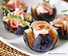
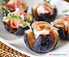
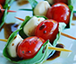
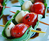

Recetas de cocina sana y fácil
Comer bien es la mejor forma de mimarse, de cuidar la salud y, sobre todo, el corazón. Además, comer sano no es sinónimo de comer aburrido, soso y sin gracia… y si no, fíjate en las estupendas recetas sanas que te proponemos.La Organización Mundial de la Salud insisten que comer sano es uno de los elementos más importantes para cuidar la salud, disfrutar de una vida plena y recuperar el bienestar. En general, la dieta debe ser variada y se debe evitar el consumo excesivo de grasas, azúcar y sal. De hecho, los principales motivos de las enfermedades cardiovasculares son (además del tabaco) el colesterol alto, la diabetes, la hipertensión y la obesidad… factores que se pueden corregir cuidando nuestra dieta.
Arte en el plato: arte que se come, gastronomía que se admira
El arte también se come. Los grandes chefs están empeñados en que un acto tan común y cotidiano como comer, se convierta en una experiencia sensorial, artística, sublime. La cocina es “el arte más completo que existe”, asegura Carme Ruscalleda, la chef con más estrellas Michelin, y quien encontró entre los fogones una vía para expresar su vocación artística.Su menú degustación esta temporada, denominado ‘de estilos pictóricos’, es un viaje que lleva al comensal por el arte figurativo balear, el pop art de Estados Unidos, el postimpresionismo holandés o el expresionismo y el cubismo, entre otros estilos pictóricos...
Entonces... ¿los chefs son artistas?
Hay quien defiende que más que artistas, los cocineros son artesanos. Lo cierto es que, hoy en día, se espera de la alta gastronomía que ofrezca a sus clientes platos y menús que los estimulen y los sorprendan, que usen nuevos métodos y técnicas para tratar y manipular los ingredientes, que interactúen con la tecnología y el diseño en aspectos como la ambientación de la sala o el emplatado para crear experiencias sensoriales... en definitiva, a la alta cocina se le exige un alto nivel de innovación y creatividad.Además, la alta cocina goza ahora mismo de un gran prestigio como creadores de un discurso vanguardista y diálogo intelectual, comparable con otras formas de expresión artística más asentadas históricamente.
¿No rindes en el curro? Es porque comes así
¿Te sobas en el curro delante del ordenador? ¿Muchas veces te sientes como un personaje de 'The office', totalmente desmotivado y sin ganas de nada? Pues amigo, es más que posible que parte de lo que te sucede sea culpa de cómo comes en el curro... bueno, y la otra mitad del Farmville que te trae loco. Pero eso ya es harina de otro costal.
Evita la comida basura, apuesta por lo integral.
Apuesta por lo integral. Frente al arroz, la pasta o el pan blancos, comer integral permite disfrutar de una digestión más lenta y sostenida en el tiempo. Esto quiere decir que no te sobrevendrá la bajona y que podrás mantener durante más tiempo los niveles de energía óptimos para seguir trabajando. Es una pequeña diferencia pero el cambio resulta fundamental. Si eres de esos que se ríen inmisericordemente el compi que bebe agua de una botella como si estuviera corriendo una maratón en lugar de mandando mails, arrepiéntete...
 



 
